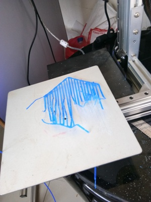
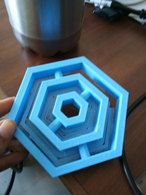

As 3-d printing week was started we were given task of printing an object which could not be made by substractive method.
So first task for me was to find out what is additive and substractive method.
Difference between additive and substractive method.
Step-2
Now it was time to search for designs that could be only printed by additive method
So i went through lot of models and finalized to make gyroscope.
Step-3
What is gryoscope and why it is used
As one is making any model one should understand what it is and why it is used.
Gyroscope is a device consisting of a wheel or disc mounted so that it can spin rapidly about an axis which is itself free to alter in direction.
Paper Works
Before doing anything it is necessary to list out things and do layout on paper to do work in proper direction
Starting 3-d print
IN our lab we had ultimaker 2 so for that first of all i installed cura to operate it.
Starting with Designing
I made my First design which look like this but it had lot of flaws
I had kept layer height of 0.2 mm and infill-20% .
I had kept distance of 0.4mm between hole and cylinder which was too small so it got stuck up with each other.
I had to stop my first trial print as there was some problem with printer.

As you can see the model was not proper so it broke in some time and colud not spin.
Another Model
Noticing the flaws of first model I designed other testing model
It got printed well but still it had errors so i went for other testing.